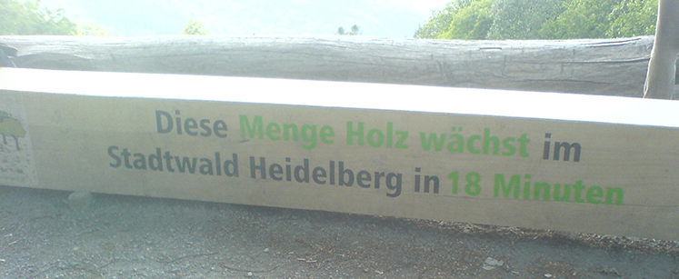
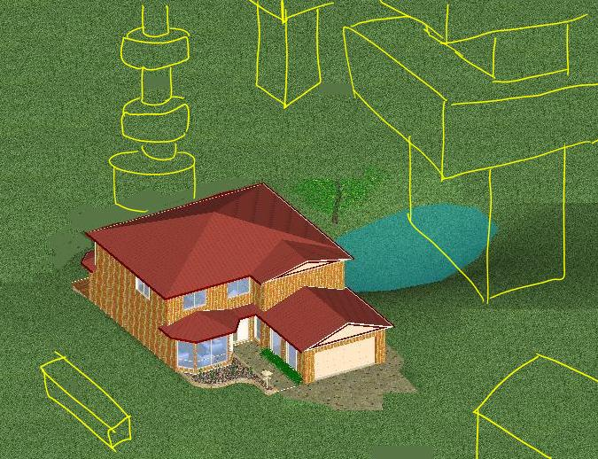

Effective communication may involve representation (a picture of the new model of a car), or metaphor (a bodybuilder to represent the stamina you get from a cup of coffee) – all pretty standard lore. But few items can be as powerful as exemplification, the display of the real thing. Atop Heidelberg’s trolley car line visitors are welcomed by a large piece of wood, about 6m long, 1/2m across. It can be used as a bench – the site is quite panoramic. A simple message is written on its side:
“This amount of wood grows in Heidelberg’s forest every 18 minutes.”

Passersby do not have an idea of exactly how big Heidelberg’s forest is. They do see the portion that stretches from where they sit, down to the town’s spires. They assume someone has figured out the calculations. No matter what, the message is powerful. You can imagine dividing the bench in smaller parts: a cube with a side of 50cm is the amount that grows in 90 seconds, just in front of you, right now. You almost feel the growth.
Among the many prospects of design for the future, conservation design should retain our attention. We can effectively contrast the depletion of the fossil carbon (oil, methane) by freezing carbon captured by growing trees. Wood furniture – like the Heidelberg bench, or the table in your dining room – is a long-term carbon sink; but these are minimal contributions. At some point it may become necessary to increase the storage of wood, and create gigantic wood fills that somewhat mitigate for the fossil carbon that is liberated by human activities. Houses will have a frozen carbon tower next to them, large wooden constructions that keep carbon for centuries. Public art and architecture will reorient themselves around the notion of a city whose energy balance includes carbon sinks. Gigantic wooden totems may be the major change in our urban landscape in the centuries to come.
